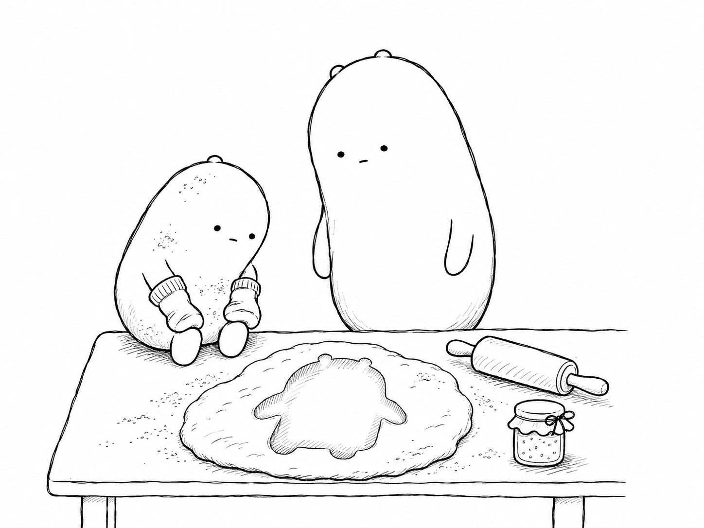

Today’s poem

Little Wonderer Leaves Clues
Little Wonderer touched the jam jar lid,
the window, the doorknob, the drum. Yes, it did.
It patted the mirror, it poked at the cake,
it tapped every spoon just for tapping’s sake.
“Oh no!” it cried out. “There are clues everywhere!
A loop on the cupboard! A whorl on the chair!
A detective could follow my trail through the house.
I’m as easy to find as a jam-covered mouse!”
Big Wonderer nodded and wiped off a pane.
“Your swirls will grow bigger but mostly remain.
No two have been found to match, pair after pair,
so a print is a clue that says someone was there.”
So the little one wore socks on both hands all day,
to tiptoe through mischief and sneak right away.
But it tripped on the rug and it fell in the dough,
and now there’s a Little-shaped print, head to toe.